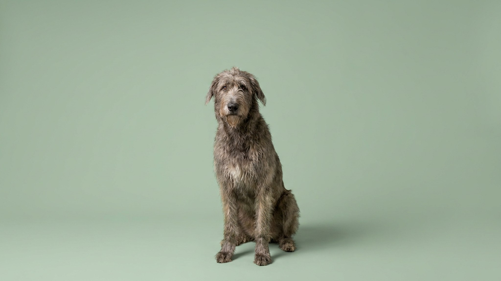

Встанет на задние лапы — окажется ростом с взрослого человека. А дома этот гигант лежит пластом половину дня и поднимается, только чтобы прислониться к вам всем весом. Ирландский волкодав ломает ожидание: охотник, которого выводили брать волков, вырос в тихого компаньона, которому теснота вредит меньше, чем нехватка мягкого места и общества. Ниже — сколько он живёт, во что обходится и кому правда подойдёт.
🐾 У вас ирландский волкодав?
AnimaLife соберёт уход под породу: к каким болезням есть склонность, что проверять по возрасту, чем кормить и когда пора к врачу. Бесплатно, прямо в мессенджере.
Собрать план ухода → Собрать в MAX →
У вас iPhone? AnimaLife есть в App Store
Взрослый волкодав — на удивление спокойная собака. Ему хватает пары неспешных прогулок и короткого спринта на просторе, чтобы вернуться домой и лечь. Дома он не мельтешит, не лает по пустякам и обычно ровно ладит с детьми и другими животными — гнать и доминировать ему незачем.
Совсем другое дело — щенок и подросток. До полутора-двух лет кости и суставы растут быстрее, чем крепнут, поэтому большие нагрузки, прыжки и долгие пробежки в этом возрасте вредят. Растущему гиганту нужны спокойный режим, ровные поверхности и терпеливое воспитание с первых недель — переучивать 60-килограммового взрослого поздно.
Честный минус породы: живут волкодавы мало, в среднем 6–8 лет. Это плата за размер — крупное сердце и длинные кости работают на износ. Решение принимают с открытыми глазами: гигант — это несколько лет большой любви, а не спутник на пятнадцать лет.
Что в руках хозяина — сделать эти годы качественными: держать собаку в форме без лишнего веса, не перегружать суставы, кормить спокойно и давать отдых после еды. Плановые осмотры у ветеринара раз в полгода-год помогают заметить нагрузку на сердце и суставы раньше, чем она станет проблемой.
Волкодав — для спокойного дома, где кто-то почти всегда рядом, есть место, машина под его размер и бюджет на большую собаку. Не лучший выбор, если вас целыми днями нет дома, нужен охранник (он миролюбив) или спутник для марафонов и великамарафонов — форсировать нагрузки этой породе нельзя.
🐾 Ваш питомец — ирландский волкодав?
Заведите профиль в AnimaLife: приложение запомнит породу, возраст и вес и будет подсказывать по уходу именно для неё. Вопросы AI-ветеринару — круглосуточно и бесплатно.
Завести профиль → Завести в MAX →
У вас iPhone? AnimaLife есть в App Store
🐾 Понравился разбор?
Подпишитесь на канал — каждый день разбираем по одному тревожному симптому у кошек и собак: что в пределах нормы, а когда пора к врачу. Подпишитесь, чтобы не пропустить разбор, который может спасти здоровье вашего питомца.
Материал носит информационный характер и не заменяет очную консультацию ветеринара.